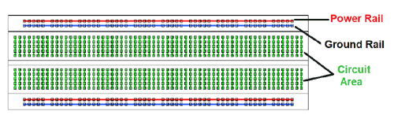

Week 6: Breadboard Wiring, Part Replacements, and Discovering Microservice Architecture Patterns.
Week 6 was mainly spent assembling the Greenhouse monitor breadboard and ordering an alternative ESP8266 microcontroller to convert the greenhouse monitor unit into a standalone web server. I also begain exploring microservice architectures with the help of a Udemy course called "Build, deploy, and scale an E-Commerce app using Microservices built with Node, React, Docker and Kubernetes". This lecture series has pointed out several key microservice patterns that I think I can implement using Node JS and React after all of the WiFi transciever based server unit his been assembled and tested. My current architectural design pattern idea is to write a driver that will "harvest" the sensor data at regular intervals and present it to the serial bus where the messages can be read by the the recieving portion of the driver firmware, that can collect and transform this data into schema-defined tuples and route them to a "raw_data" SQLite database table. (preferably this database will be located on the server itself, however cloud-based data storage is another option if available memory does ever become an issue). Once the raw data table has been formed, I can write an SQLite trigger that will aggregate the raw data and submit it to a separate offline database (i.e., a data warehouse) whenever a new group of entries is placed into the raw data table. I believe I can then present this summary data using a React single-page web application form that I can program to collect and serve to users in the form of XHTML or JSON, whenever an update is detected in the offline database. The resulting single-page web API that can then very easily be linked or embedded into this website for final demonstration purposes.
Assembling, Calibrating, and Testing the pH Meter Function
I tracked down the following tutorial mentioning some of the parts I have on hand: "pH meter Arduino, pH Meter Calibration, DIYMORE pH Sensor Arduino Code". I decided to wire the positive and terminal leads to the breadboard in preparation for the serial hub integration that will come later in the project. Here is another article that came in handy: .
After I placed the connections and verified a response from the pH sensor, then I grabbed a glass of milk and a glass of vinegar and lined out a calibration curve using the theoretical pH values of each substance (real calibration solutions are on the way!). The result is a remarkably stable and robust pH probe, sending updates to the serial monitor on my computer at a rate of 2 Hz.
Success!! A Working pH Meter and Thermocouple.

One of the most exciting moments this week was getting the drivers for the pH meter and thermocouple up and running. Since I didn't have any real calibrating solutions on hand I decided to calibrate the pH probe using milk and vinegar. As awful as this sounds, the attempt went very well and I managed to produce some fairly accurate values in the serial monitor window.The current driver code is shown below.
// Hardware
const int analogInPin = A0; // an analog recieving pin
// Variables
float average_voltage, slope, intercept, pH;
int buf[10],temp,NUM_BINS,avg_reading;
unsigned long int avgValue; // declare the aggregator variable used to sample the pH.
// establish serial communication rate.
void setup() {
Serial.begin(9600);
}
// driver main loop.
void loop() {
for(int i=0;i<10;i++){
buf[i]=analogRead(analogInPin); // read the analog value from analog-in pin "A0", place the value in the buffer.
delay(30); // delay the next read for 30 ms.
}
for(int i=0;i<9;i++){
for(int j=i+1;j<10;j++){
if(buf[i]>buf[j]){ // this if statement manages the buffer in sorted order (usefule in e.g., monotonic and antimonotonic pattern recognition)
temp=buf[i];
buf[i]=buf[j];
buf[j]=temp;
}
}
}
avgValue=0;
for(int i=2;i<8;i++){
avgValue+=buf[i];
}
int NUM_BINS = 6; // number of readings in measurement
int avg_reading = float(avgValue)/NUM_BINS;
float average_voltage = avg_reading*(5.0/1024); // discretize the phVoltage reading
float slope = -5.7; // slope of the calibration curve. represents the linear correlation between voltage and response. (Slope value given in the example code: -5.70)
float intercept = 29.68; // intercept. adjust to calibrate.
float pH = ( average_voltage * slope ) + intercept; //
Serial.print("Current pH: ");
Serial.println(pH);
delay(500);
}
Breadboard Basics

Figure 1.) Basic Arduino Breadboard circuit pinout diagram. The top and bottom power rails (red) are divided into 3.3V and 5V power supply sections. Ground rails are shown in blue and can be used by any circuit component requiring a ground. The center (green) pinout locations are reserved for circuit components, and for our intents and purposes acts as a serial communication hub.